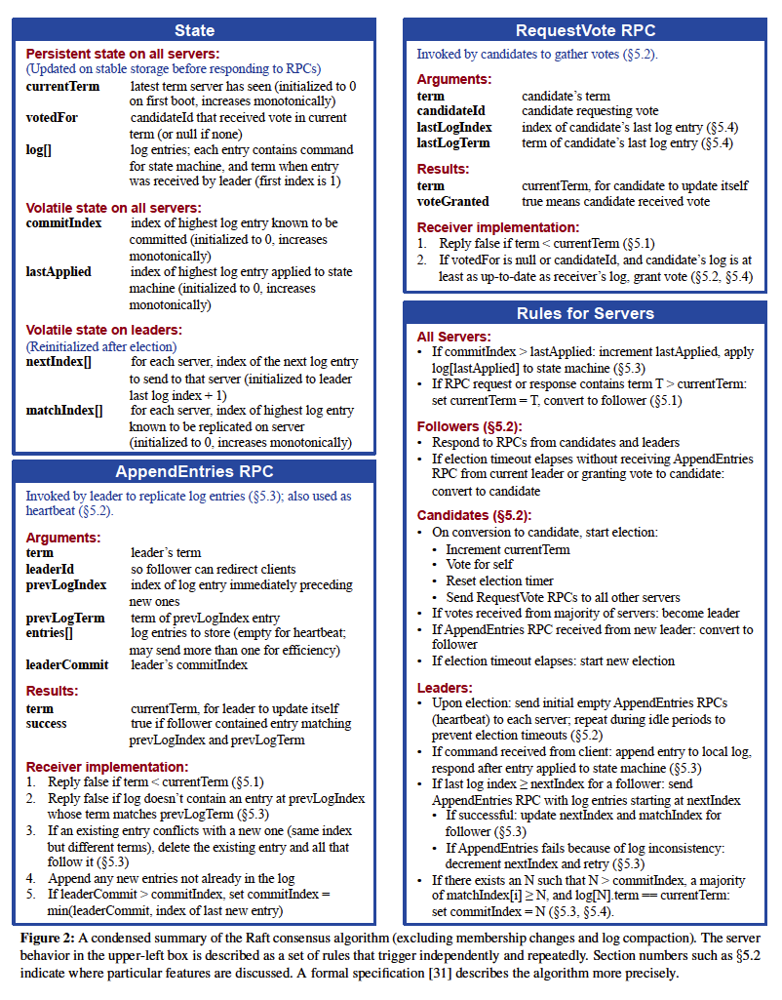
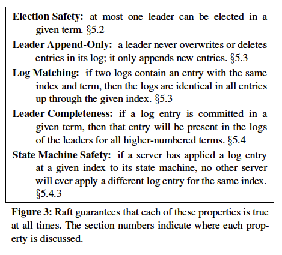

翻译了Diego Ongaro和John Ousterhout的论文《In Search of an Understandable Consensus Algorithm(Extended Version)》原文地址
摘要
Raft是一种管理复制日志的一致性算法。Raft产生的结果和Paxos或者multi-Paxos是一样的，并且Raft和Paxos一样高效，但是Raft的结构和Paxos是不一样的；这样让Raft比Paxos更容易理解并且为构建使用系统提供了更好的基础。为了增强可理解性，Raft分离了一致性算法的关键要素，比如leader选举，日志复制和安全性，并强制强一致性来减少必须要被考虑的状态。用户的研究结果表明，对学生来说，Raft比Paxos更容易学习。Raft也包括改变集群成员的新机制：使用重叠大多数成员保证安全性。
1 介绍
一致性算法可以让一批机器作为一个相关的组，这样即使组里面有机器故障，但是整个组仍然能够对外提供服务。因为这样，一致性算法在构建一个可靠的大规模软件系统中扮演者关键角色。在过去十年中，Paxos算法在一致性算法的讨论中一直占主导地位。大多数一致性算法的实现都基于Paxos算法或者受其影响，并且Paxos已经作为教学生一致性算法的主要工具。
不幸的是，Paxos非常难于理解，尽管为了让它更通熟易懂做了无数的尝试。此外，Paxos的架构让它需要作出复杂的改变才能支持实用的系统。因此，系统集成商和学生都在和Paxos算法作斗争。
在我们和Paxos算法斗争之后，我们开始寻找一个新的一致性算法，新的算法可以为软件系统建设和教学提供一个更好的基础。我们的方法——主要目标是易于理解——是与众不同的：我们可以为实用系统定义一个一致性算法，并且这个算法比Paxos更容易学习？此外，我们希望该算法对系统建设者来说更为直观。不仅仅是让算法有效，并且让该算法有效看起来显而易见也很重要。
这个工作的成果就是被称为Raft的一致性算法。在设计Raft时，我们采用了特定的技术来提高可理解性，包括分解（Raft分离了leader选举，日志复制和安全性）和状态空间减少（相对于Paxos，Raft减少了不确定性程度和某个server会与其他server不一致的途径）。在两所大学共43名学生参与的用户研究表明，Raft比Paxos更容易理解：在学完两个两个算法后，其中33名学生在Raft算法上回答的比Paxos更好。
Raft在很多方面和已有的一致性算法很像，但是它有一些新颖的特点：
- strong leader: Raft比其他一致性算法使用更强形式的领导力。比如，日志入口只能从leader流向其他server。这简化了日志复制的管理并使Raft更容易理解。
- leader选举：Raft使用随机的定时器去选举leader。这在其他一致性算法都需要的心跳检测上增加了一点机制，但是快速且简单地解决了冲突。
- 成员变化：Raft在变更集群中server集合成员时，使用了新的联合一致性方法，在过度期间两个不同配置的大多数成员有交集。这可以让集群在配置改变期间也可以继续正常操作。
我们认为Raft算法优于Paxos算法和其他共识算法，不论是作为教学还是作为实现的基础。Raft算法比其他算法更简单并更容易理解；它被充分描述足以满足一个实际系统的需求；它有很多开源实现并且被很多公司使用；它的安全性已经被证实指定和证明；其效率也可以和其他算法相媲美。这篇论文剩下的部分介绍了复制状态机问题（第2部分），讨论了Paxos算法的优缺点（第3部分），描述了为了可理解性我们采用的一般方法（第4部分），展示了Raft一致性算法（第5到8部分），评估了Raft算法（第9部分），并且讨论了相关的工作（第10部分）。
2 复制状态机
一致性算法通常出现在复制状态机的情景中。在这个方法中，状态机在一批server上，计算相同状态的相同副本，即使某些server宕机了也可以继续操作。复制状态机在分布式系统中被用来解决很多容错问题。比如，只有一个leader的大规模系统，GFS，HDFS和RAMCloud，通常使用单独的复制状态机去管理leader选举和leader宕机时也必须可用的配置信息。复制状态机的例子包括Chubby和Zookeeper。
图1: 复制状态机架构。一致性算法管理着复制日志，日志包含从client发来的命令。状态机按照完全相同的顺序处理日志中的命令，所以他们产生一样的输出。
复制状态机通常使用复制日志的方式实现，像图1中的那样。每一个存储了一个包括一系列命令的日志，状态机按照顺序执行这些日志。每一个日志包含相同的命令，并且顺序也相同，所以每一个状态机执行相同的命令序列。因为状态机是确定性的，每一个计算相同的状态并有相同的输出序列。
一致性算法的工作是保持复制日志一致。server上的一致性模块从client接受命令，让后把命令加入到一致性模块的日志中。server上的一致性模块和其他server上的一致性模块通信，确保每一份日志最终都包含相同的请求，并且顺序是一样的，即使某些server故障了。一旦命令被正确地复制了，每一个server上的状态机使用日志中的顺序处理它们，然后输出被返回给client。结果是，所有的server看起来组成了一个单一的、高度可靠的状态机。
为实际系统设计的一致性算法通常具有下面的属性：
- 在所有非拜占庭错误的情况下保证安全性（从来不会返回一个不正确的值），包括在网络延迟、分区、丢包、重复和重新排序的情况下都可以保证安全性
- 只要大多数的server正常工作并且可以和其他server和client通信，那么算法是充分可用的。因此，通常有5个节点的集群可以容忍2个server失效。假设server是通过停止来模拟失效的；以后失效的server可以从永久存储上的状态恢复过来，然后重新加入集群。
- 不依赖计时来保证日志的一致性：时钟错误和极端的消息延时在最坏的情况下会导致可用性问题
- 在通常情况下，集群中的大多数节点响应了一轮远程过程调用后，一条命令就执行完了；少部分慢的server不需要影响整体系统性能。
3 Paxos的问题
在过去十年，Leslie Lamport的Paxos协议几乎成了一致性算法的代名词：这是在课堂上被教的最多的协议，并且大多数一致性算法的实现都使用Paxos作为起点。Paxos首先定义了一个能够在单个决策达成一致的协议，例如单个复制日志条目。我们将这个子集称为单一法令Paxos。然后Paxos组合这个协议的多个实例以促进一些列决策，比如日志（multi-Paxos）。Paxos确保安全性和liveness，并且它支持集群成员的改变。Paxos的正确性已经被证明，并且在一般情况下是高效的。
不幸的是，Paxos有两个明显的缺点。第一个，Paxos是非常难以理解的。完整的解释是臭名昭著的不透明；很少有人能够理解，并且必须付出巨大的努力。结果，有很多尝试使用更简单的术语解释Paxos。这些解释集中在单一法令子集，即使这样也是充满挑战。在对NSDI 2012与会者做的非正式调查中，我们发现很少有人喜欢Paxos，即使是经验丰富的研究人员。我们自己与Paxos斗争；直到我们阅读了很多简单的解释并设计了我们自己的可选协议后，我们才能理解完整的Paxos算法，这个过程花了我们将近一年的时间。
我们假设Paxos的不透明来源于：Paxos选择了单一法令子集作为它的基础。单一法令Paxos是密集和微妙的：它被分为两个阶段，对这两个阶段没有直观的解释并且不能被独立理解。因此，对于单一法令协议为什么能够工作很难有直观的看法。multi-Paxos的组合规则明显增加了复杂性。我们认为，就多项决定达成共识的总体问题（比如，日志而不是日志项）可以被分解为更直接和明显的方式。
Paxos的第二个问题是不能为构建一个实用的实现提供一个好的基础。一个原因是在multi-Paxos上没有达成广泛的共识。Lamport的描述大多数是关于single-decree Paxos的，他描绘了multi-Paxos的多种方法，但是很多细节都缺失。已经有很多尝试去丰富和优化Paxos，但是这些尝试都不一样并且和Lamport的描绘也不太一样。比如像Chubby这样的系统实现了类Paxos算法，但是在大多数情况下，它们的细节并没有公布。
此外，Paxos架构对于构建实际系统是一个糟糕的架构；这是single-decree分解的另一个结果。例如，独立选择一批日志项并把它们融合到顺序日志中并没有什么好处；这样只是增加了复杂度。设计一个围绕日志的系统更为简单和高效，新的日志项按照约定的顺序顺序地附加。Paxos的另外一个问题是它使用对称的点对点方法（尽管它最终表明一种弱形式的领导作为性能优化）。在一个只需要作出一个决定的简单世界中，这就说得通了，但是很少有实际系统使用这种方法。如果必须作出一系列的决定，那么先选举一个leader然后让这个leader协调作出决定，就更为简单和快速了。
结果，实际系统与Paxos几乎没有什么相似之处。每一种实现都是从Paxos开始，发现实现它很困难，然后开发了一个显著不同的架构。这是耗时且容易出错的，理解Paxos的困难加剧了这个问题。Paxos的公式可能是一个很好证明其正确的定理，但是实际的实现和Paxos差别这么大，让Paxos易于证明的特性就没有很大的价值了。以下来自Chubby实现者的注释是典型的：
在Paxos算法的描述和真实世界系统的需求之间，存在着巨大的鸿沟
...
最终的系统将会基于未经证实的协议。
由于这些原因，我们认为Paxos不能为系统建设或者教学提供良好的基础。鉴于在大型软件系统中一致性算法的重要性，我们决定看我们能不能设计一个比Paxos更好的替代的一致性算法。Raft是这次试验的结果。
4 为了易于理解设计
我们在设计Raft的时候有很多目标：它必须为系统建设提供一个完整和实际的基础，从而可以显著减少开发者的设计工作量；在所有情况下它必须保证安全，在典型的操作条件下必须可用；在通常的操作中必须高效。但是我们最重要的目标——也是最具挑战性——是易于理解。对于大量听众来说，必须能够很好地理解该算法。此外，这个算法必须看起来很直观，所以系统建设者可以在现实世界的实现中做扩展（扩展不可避免）。
在Raft的设计中，有很多点，我们不得不在替代方法中选择。在这样的情况下，我们基于易于理解性来评估可选的方法：解释每个选择的难易程度是怎么样的（比如，状态空间的复杂度是怎么样的？它是否具有微妙的含义？），让读者完全理解这个方法及其实现是否很容易？
我们认识到这种分析存在高度的主观性；尽管如此，我们使用两种通用的技术。第一种技术是众所周知的问题分解方法：我们尽可能将问题分隔为我们能够相对独立解决、解释和理解的部分。比如，在Raft中我们将leader选举、日志复制、安全和成员变化分开。
我们的第二个方式是通过减少需要考虑的状态数量来简化状态空间，这样就可以让系统更加一致并在可能的情况下消除不确定性。具体来说，日志不允许有空洞，Raft限制了日志可能变得不一致的方式。尽管在大多数情况下我们尝试消除不确定定性，有些情况下不确定性实际上提高了可理解性。特别地，随机方法引入非确定性，但是它们倾向于通过用类似方式处理所有可能的选择来减少状态空间（“随便选择；没有关系”）。我们使用随机化简化Raft的leader选举算法。
5 Raft一致性算法
Raft是一个用来管理像第2节中描述的复制日志的算法。图2总结了浓缩形式的算法供参考；图3列出了算法的关键特征；插图的元素将在本节其余的部分分段讨论。
Raft通过选举一个独特的leader并让这个leader完全负责复制日志的管理来实现一致性算法。这个leader从client接受日志项，在其他server上复制这个日志项，并告诉其他server什么时候将日志项应用到状态机上是安全的。有一个leader简化了复制日志的管理。比如，这个leader可以不用咨询其他的server就可以决定把日志项放在日志中的什么地方，数据流是简单地从leader流向其他server。一个leader可能会故障或者和其他server失去联系，在这种情况下，一个新的leader就会被选举出来。
鉴于领导者的方法，Raft将一致性问题分解为三个相关的独立子问题，会在下面的章节中讨论：
- Leader选举：在已有的leader故障后，一个新的leader必须被选举出来（5.2节）。
- 日志复制：leader必须接受client发来的日志项，并且在集群中复制日志项，强制其他节点上的日志和leader一样（5.3节）。
- 安全性：Raft算法安全性的关键是图3中状态机的安全特性：如果任何server已将一个特定的日志项应用到它的状态机上，那么其他server不会再相同的索引上应用一个不同的命令。5.4节展示了Raft是如何保证这个特性的；解决方法在选举机制上使用了一个附加的限制（5.2节）。
在介绍一致性算法后，本节讨论系统中可用性问题和时序起到的作用。


5.1 Raft基础
一个raft集群包括多个server，通常有5个，这样两个节点宕机后系统仍能正常工作。在任何时刻，server的状态都属于下面三个状态之一：leader，follower或者candidate。在正常情况下，只有一个leader，并且其他的server都是follower。follower是被动的：它们对自己不发出任何请求，它们只响应leader和candidate的请求。leader处理所有client的请求（如果client向follower发送请求，follower会把请求转发给leader）。第三种状态，candidate被用来选举一个新的leader，在5.2节中会详细介绍。图4展示了这三种状态及他们之间的转换，下面会讨论状态变迁。
raft把时间分为任意长度的term，如图5。term被编号为连续的数字。每个term以选举开始，一个或者多个candidate尝试成为leader。如果一个candidate赢得了选举，那么在term的余下部分，它将作为leader对外提供服务。在某些情况下，选举将会导致分裂的投票。在这种情况下，term会结束，并且没有leader；一个新的term（一个新的选举）会马上开始。raft保证在一个给定的term中，最多只有一个leader。
不同的server会在不同的时间观察状态的改变，某些场景下一个在整个term内server可能不会观察选举。在Raft中term扮演逻辑时钟的角色，term允许server检测过时的信息比如陈旧的leader。每一个server保存一个当前term编号，随着时间的推移，单调递增。只要server之间相互通信，当前term就会被交换；如果一个server的当前term编号比其他的server小，这个server就会把自己的当前term的值修改为大的那个。如果一个candidate或者leader发现他们的term过时了，它们会立即恢复到follower的状态。如果一个server接收到一个陈旧的term编号，它会拒绝这个请求。
Raft的server使用远程方法调用（RPC）进行通信，基本的一致性算法需要两种类型的RPC。RequestVote类型的RPC调用在选举期间被candidate启动（5.2节），AppendEntries类型的PRC调用在leader复制日志项和提供一种形式的心跳的时启动（5.3节）。第7节增加了第3种用于在server之间传输快照的PRC调用。如果没有及时收到RPC响应，server会重发RPC请求，并且多个server并发地发出RPC调用以获取最好的性能。
5.2 leader选举
Raft使用心跳机制出发leader的选举。当server启动起来时，刚开始他们都是follower。一个server只要它从leader或者candidate收到有效的RPC消息，它就会保持在follower状态。leader周期性地向所有的follower发送心跳（没有日志项的AppendEntries类型的RPC请求）来保持它的权威性。如果一个follower在一段时间内没有收到消息，被称为选举超时，那么follower会假设没有可行的leader然后开始选举新的Leader。
为了开始选举，follower增加它当前的term编号然后转变为candidate状态。然后它给自己投票，并行地给集群中的其他server发送RequestVote类型的RPC请求。一个candidate继续在这个状态，直到下面三件事情中，有一件发生了：(a)它赢得了选举(b)其他的server建立的领导地位(c)一段时间过去了还是没有胜出者。在下面会分开讨论这些结果。
TODO
- 这篇论文是extended版本，第一版也需要看。